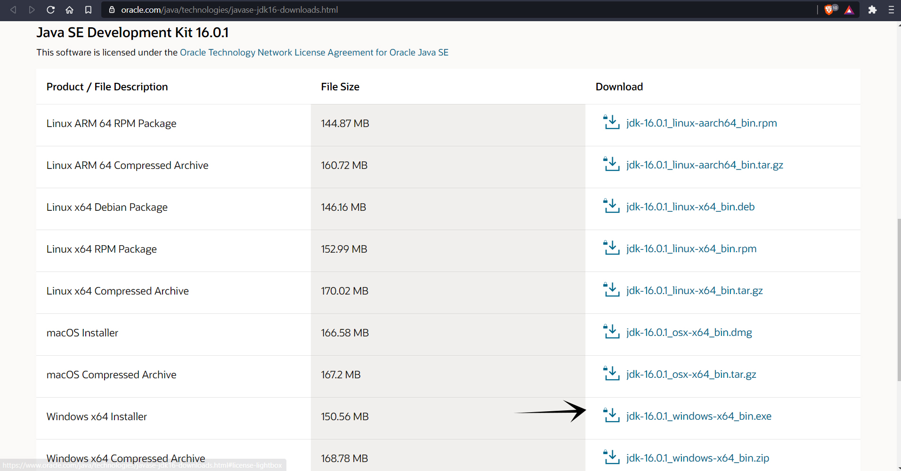
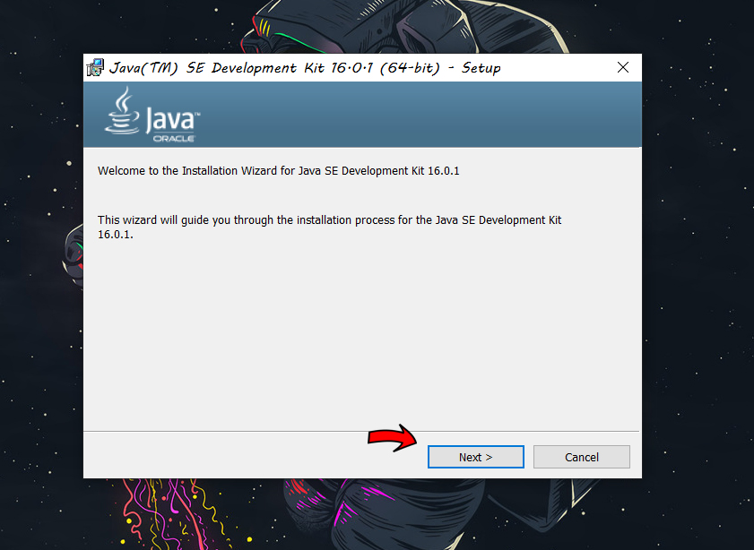
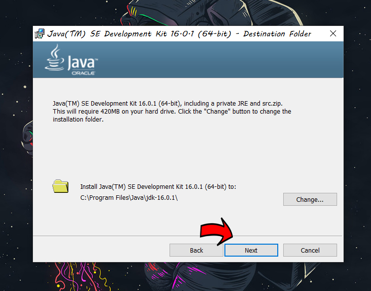
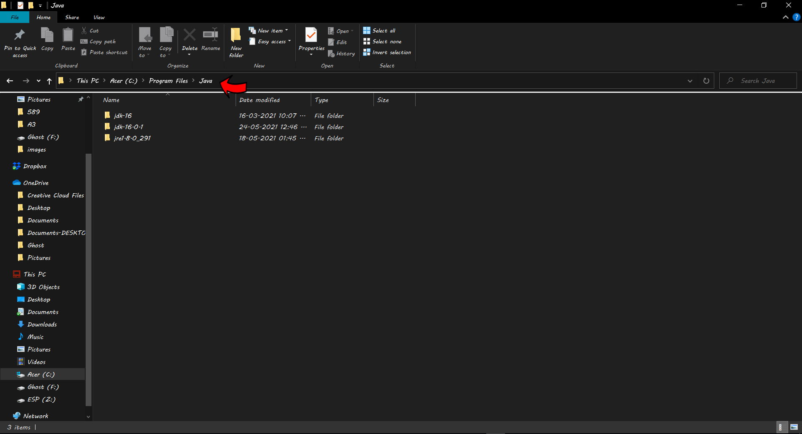
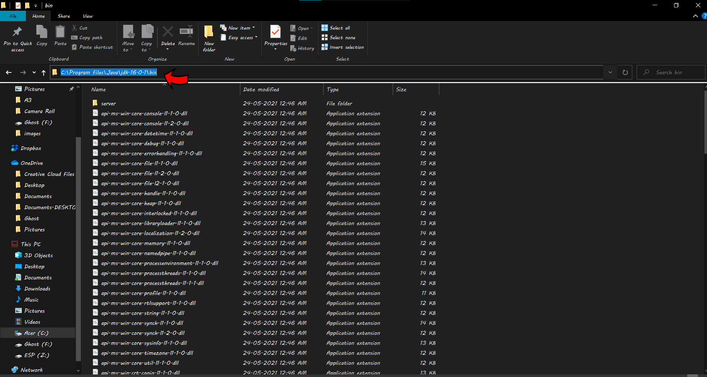
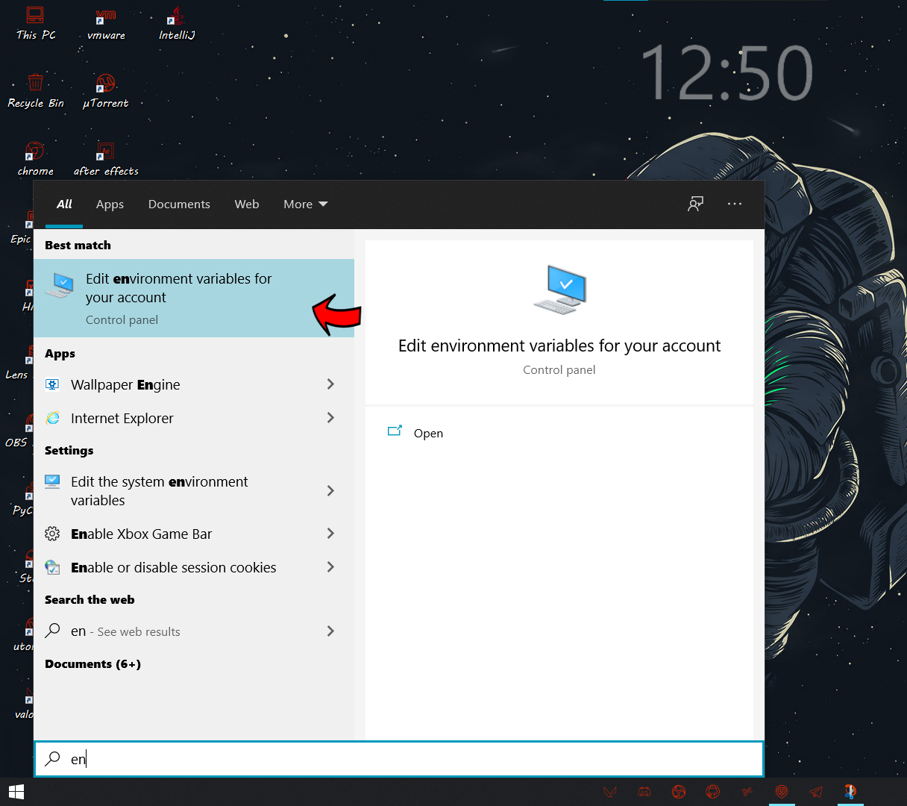
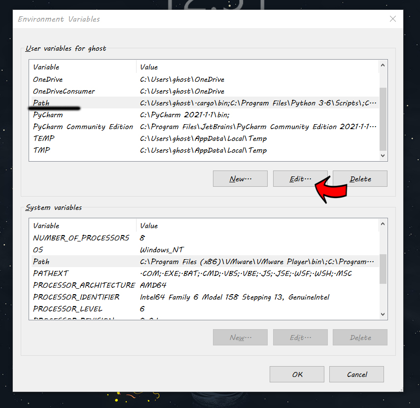
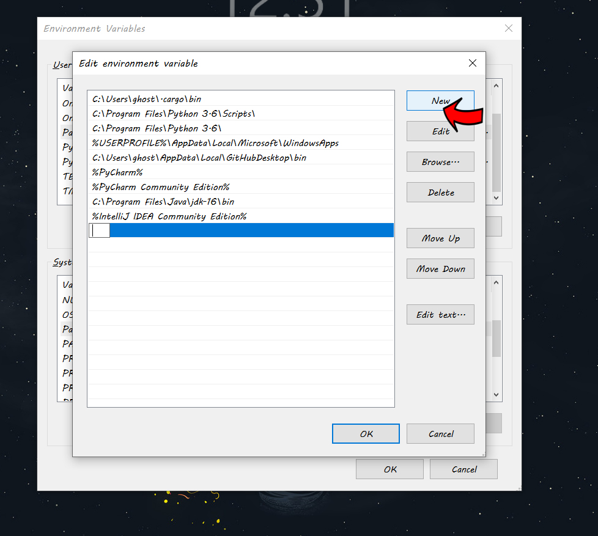
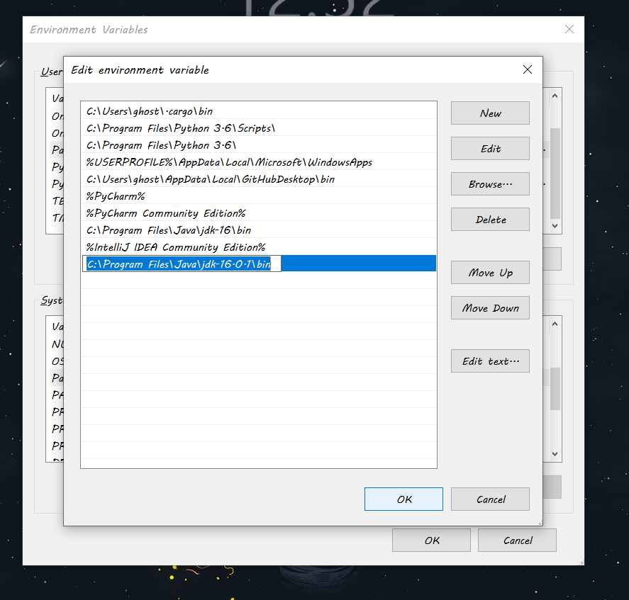
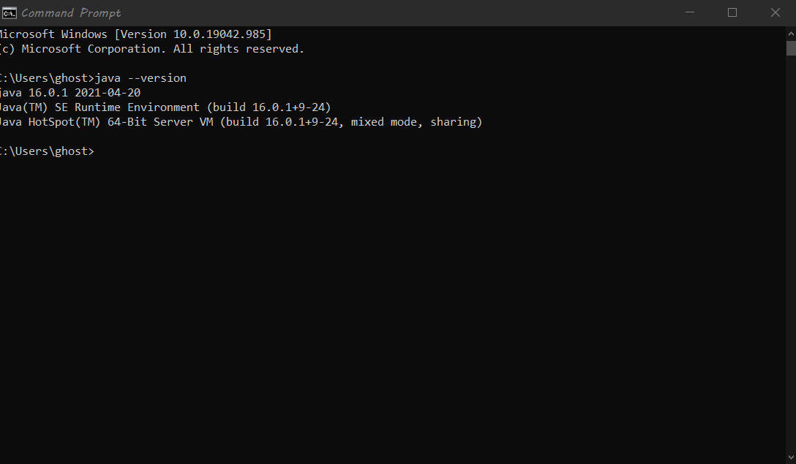

JAVA INSTALLATION STEPS
To run java files we need to install JDK which is avalaible on official site of java
1.Go to this site to download jdk latest version : Download now
2.Download windows X64 exe as showin in below.

3.Highlight the checkbox and proceed downloading.
4.open dowloaded file and follow the steps as below.

5.Click next and again next

Note:Don't change this path for better experience
6.Follow the setup and complete installation
7.open java directory to copy the bin path

8.Open jdk which you have installed and copy bin path as shown in below.

9.Search for Environment variables in windows search bar.

10.Select path and click edit.

11.Click on new and paste bin path.

11.After adding path click okay

12.That's it....we installed java successfully.To verify java just open cmd and type java --version.

Hope my post is helpful :)